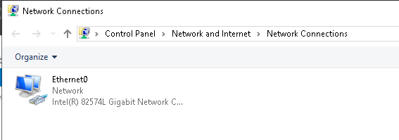

Creating an Active Directory domain
Setting up DC
Preqrequisite :
Windows server 2019 : https://www.microsoft.com/en-in/evalcenter/evaluate-windows-server-2019
Setting up DNS :
DNS is an important prerequisite of Active Directory. Without it, Active Directory will not function, or should we say, you can't install or promote a server to a domain controller. Active Directory heavily relies on DNS.
- So first we will open up our network adapter settings in control panel

- Next will go to its properties and setup IPv4 with our DNS server address :


Thats all we have to do to setup DNS on our Windows Server 2019.
Changing Machine Name
- Settings → System → About → Rename this PC

- We named it vDC-01 :
v - Virtual
DC - Domain Controller
01 - First Domain Controller
Installing Active Directory
- First we will go to Manage → Add Roles and Features

- Now just follow the screenshots :


Promoting Server to Domain Controller
⇒ So when we startup Server Manager we see the following Alert saying that we need to configure some thing for AD Domain Services to promote it to a DC.

- So first we will have to create a new forest with whatever root domain name you like.

- Next we just set DSRM Password

- We dont need to create DNS delegation.

- Next we have the option to set our NETBIOS Name

- Finally we finish and install

So now our Domain Controller is ready to be used. When it reboots we get the following login :

Adding Users
⇒ We will go to our windows start menu and go into Windows Administrative Tools and open up Active Directory Users and Computers


- First we will be creating OU ( Organizational Unit ) for Groups and Users under IN ( India - Country ) OU.

- Next we moved the groups from Users to the OU we created for Groups :

- Next we will be creating a user in Users OU


-
We set samname as rkumar which is the username the person will use to login.
-
Next we set password : P@ssw0rd


Setting up Client
Prerequisites
Windows 10 Enterprise : https://www.microsoft.com/en-in/evalcenter/evaluate-windows-10-enterprise
Connecting our client to DC01
- First lets open up network adapter properties and change the ipv4 settings to use DC01 dns address :
192.168.51.133


-
Next we will connect to the domain lexi.local :
- First we open up System Properties

- Next we will set the Domain to lexi.local


-
Next we just restart our client and we can login as user rkumar ( raj kumar ) on this machine

⇒ Going back to our DC01 and opening up Active Directory Users and Computers settings and we see that our CLIENT01 machine was sucessfully connected to domain.

⇒ The lab is now ready and you can practise any attacks you want.